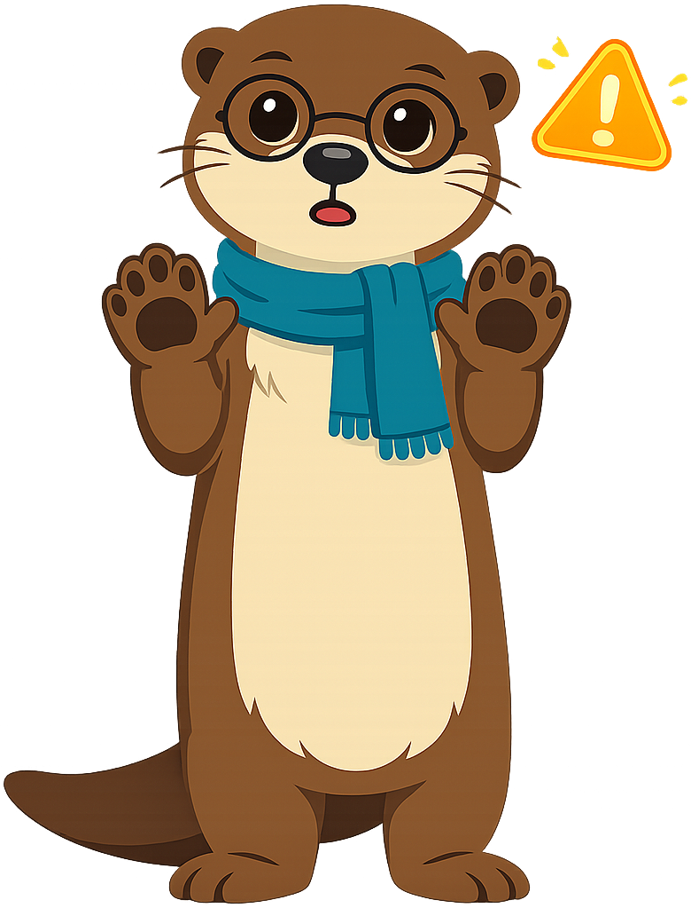

Chapter 13: What Is Misinformation?
Summary
Learn what misinformation is, how it spreads, and the emotional and curiosity hooks designers use to make you click and share.
This chapter is part of the Grade 5 Digital Citizenship learning progression. After completing it, students will be able to use the vocabulary, recognize the situations, and apply the habits introduced in the concepts listed below.
Concepts Covered
This chapter covers the following 16 concepts from the learning graph, listed in dependency order:
- Curiosity Gap
- Emotional Hook
- Information Source
- Urgency Cue
- News Story
- Fact
- News Literacy
- Opinion
- Shocking Headline
- Misinformation
- Satire
- Disinformation
- Parody
- Rumor
- Viral Post
- Hoax
Prerequisites
This chapter builds on concepts from:
- Chapter 1: Welcome to the Digital World
- Chapter 5: Private vs. Personal Information
- Chapter 6: Passwords, Clickbait, and Staying Safe Online
- Chapter 7: What Is a Digital Footprint?
- Chapter 12: Standing Up Safely as an Upstander
Kai and the Dragon Headline
Kai is scrolling through a video feed when a thumbnail stops him cold. It is a picture of what looks like a real, living dragon flying over a mountain. The headline shouts: SCIENTISTS DISCOVER LIVING DRAGON IN HIDDEN VALLEY — YOU WON'T BELIEVE THE PHOTOS!!
Kai's heart speeds up. A dragon?! His thumb hovers over the play button. He has always loved dragons. He wants this to be true so badly. He almost clicks share to send it to his cousin before he even watches it.
Then he stops. He takes a breath. Wait. Did scientists really find a dragon? That sounds... a lot.
This chapter is about the moment Kai is in right now. We'll learn the names for the wrong information that floats around online, the tricks it uses to grab you, and how a smart digital citizen can spot all of it before they fall for it.
Hi Friends!
 Hi friends, it's Maka. I'm so excited about this chapter. By the end of it, you'll have a whole set of words for the tricks people use to fool readers — and once you can name a trick, you can spot it from a mile away. Pause, think, act!
Hi friends, it's Maka. I'm so excited about this chapter. By the end of it, you'll have a whole set of words for the tricks people use to fool readers — and once you can name a trick, you can spot it from a mile away. Pause, think, act!
Facts and Opinions
Before we can talk about wrong information, we need to talk about right information. The internet is full of two big kinds of statements, and a smart digital citizen learns to tell them apart.
A fact is a statement that can be checked and shown to be true with evidence. "The Mississippi River is more than 2,000 miles long" is a fact. You can look it up. You can measure it. The fact does not change because somebody disagrees with it.
An opinion is a statement about how somebody feels or what they believe, which other people might see differently. "The Mississippi is the prettiest river in the country" is an opinion. There is no way to measure it. Two people can disagree about it and they can both be right, because it is about feelings.
Both facts and opinions are fine. Opinions are not lies. The trick is that you should not mix them up. When somebody shares an opinion as if it were a fact, that is when things get muddy.
Where do facts come from? They come from sources.
An information source is the place where a piece of information came from — the website, the book, the newspaper, the scientist, the museum, the teacher. Every fact has a source. When you find a fact online, the smart question is always who said this?
When facts come together into a story about something that happened recently, that is news.
A news story is a written or video report about something that has actually happened, made by people whose job is to tell the truth. Real news stories list their sources, name the people involved, and try to be fair. Real news stories can still get things wrong sometimes, but they care about getting it right and they correct mistakes when they find them.
The skill of reading news the smart way has its own name.
News literacy is the set of habits that help you tell real news from fake stories, find the source of a claim, and check whether something is fair or one-sided. News literacy is one of the most important superpowers a digital citizen can have. The whole rest of this chapter — and the next three chapters — are about building it.
Wrong Information — Three Words to Know
Not everything you read online is true. Not all of the wrong stuff is wrong on purpose. There are three names for three different kinds of wrong information, and the differences matter.
Misinformation is wrong information that someone shares without knowing it is wrong. They believed it. They thought it was helpful. They didn't mean to fool anybody. Misinformation is the most common kind of wrong information, and you and your friends have probably shared misinformation by accident already. That is okay — it is fixable.
Disinformation is wrong information that someone shares on purpose to fool people. Disinformation is a lie that the sharer knows is a lie. Disinformation is much more serious than misinformation, because it is a choice to harm.
A hoax is a fake story that is built to fool a lot of people at once. The dragon-discovery headline Kai almost clicked is a hoax. Hoaxes are designed to look real and to spread fast. Some hoaxes have fake photos, fake quotes from real scientists, even fake-looking news websites.
There is one more cousin in the wrong-information family.
A rumor is an unproven story that people pass along to each other, often whispered or shared in chats, with no clear source. Rumors are not always lies — sometimes they turn out to be true — but a rumor with no source should never be treated like a fact.
| Word | Wrong on purpose? | What to do |
|---|---|---|
| Misinformation | No — by accident | Politely correct it; share the real source |
| Disinformation | Yes — to harm | Don't share; tell a trusted adult |
| Hoax | Yes — to fool a lot of people | Don't share; check a trusted source first |
| Rumor | Maybe — unclear | Wait for proof before sharing |
Funny on Purpose — Satire and Parody
Not every wrong-sounding story is bullying you. Some of them are jokes. Knowing the joke kind helps you avoid getting mad at people who didn't actually mean to fool you.
Satire is writing or video that uses jokes, exaggeration, and silly examples to make a point about real life. A satirical headline might say something like "Local Cat Demands Pay Raise From Family." The joke is obvious to a reader who is paying attention, but somebody scrolling fast might mistake it for real news. Satire is not lying — it is humor with a point.
Parody is a copy of something well-known, made to be funny. A parody video might be a kid in a fake newsroom pretending to be a serious news reporter. The pretending is the joke. Parody is not lying either, as long as it is clear that it is a joke.
Both satire and parody can fool people who are reading too fast. The fix is not to be mad at the satire writer. The fix is to slow down and check before you share.
How Hoaxes Get You — Hooks and Cues
Now we get to the most important part of the chapter. Why does a smart kid like Kai almost click on a dragon hoax? Because hoax-makers and clickbait-makers are very good at their job. They use the same handful of tricks again and again. Once you can name the tricks, you can spot them in two seconds.
A shocking headline is a headline designed to surprise, scare, or amaze you so much that you click before you think. "SCIENTISTS DISCOVER LIVING DRAGON" is a shocking headline. So is "DOCTOR SAYS YOU'VE BEEN BRUSHING YOUR TEETH WRONG YOUR WHOLE LIFE." The shocking headline does not have to be true — it just has to be loud enough to make your finger move.
A curiosity gap is the trick of telling you almost enough to know what a story is about, but leaving out the most important part on purpose, so you have to click to find out. "You won't BELIEVE what they found in the closet!" is a curiosity gap. The headline knows that not knowing feels itchy, and the click is how you scratch the itch.
An emotional hook is a story or image that grabs you by the feelings — anger, fear, happiness, awe — instead of by the facts. Emotional hooks work because feelings travel through your brain faster than thinking does. By the time you have thought about whether the story is true, you have already felt it. People who design hoaxes use emotional hooks on purpose.
An urgency cue is a word or phrase that tries to make you feel like you have to act right now, with no time to think. "Read this before they delete it!" is an urgency cue. So is "Share this in the next 10 minutes!" Urgency cues are everywhere in scams (Chapter 6) and in misinformation. The right answer to any urgency cue is the same: slow down. If it is true now, it will still be true in twenty minutes.
When all four tricks come together, you get a special kind of story.
A viral post is a post that spreads from person to person extremely fast, sometimes reaching millions of people in a few hours. Viral posts are not always wrong — sometimes a true, kind story goes viral. But hoaxes and misinformation often go viral too, because the same tricks that make people click also make people share. The fact that something is viral does not mean it is true. In fact, viral posts deserve extra checking, not less.
Watch Out for the Hooks!

{kind=link}
If you see a story that makes you feel really upset, or that makes you want to share it really fast, that is a sign to slow down — not a sign to click and share. And if a story scares you in a serious way, tell a trusted adult. They can help you figure out whether it's real and what to do about it.
MicroSim: Hook Spotter
Hook Spotter — interactive p5.js MicroSim
Type: microsim
sim-id: hook-spotter
Library: p5.js
Status: Specified
Learning objective (Bloom: Analyze): Given a pretend headline or post thumbnail, the student can identify which hooks are at work — shocking headline, curiosity gap, emotional hook, urgency cue — and decide how to respond.
Visual elements:
- A responsive canvas (default 720 × 480, resizes with container width via
updateCanvasSize()called first insetup()). - A pretend headline card in the center, drawn to look like a thumbnail with bold text and a fake image.
- Four toggle buttons next to the card: Shocking headline?, Curiosity gap?, Emotional hook?, Urgency cue?
- A response panel at the bottom with three choices: Click and share, Pause and check, Tell a trusted adult.
- A score area showing how many hooks the student has correctly spotted across all rounds.
Controls (built-in p5.js controls per project rules, placed at the bottom of the canvas):
createButton('Next headline')to load the next pretend headline from a bank of fifteen.createButton('Reset')to clear the score.createSelect()to filter the bank by category: Hoax, Real news, Satire, Misinformation, Parody.
Behavior:
- Each headline has a baked-in correct set of hooks and a correct safest response.
- "Pause and check" is almost always the safest response, except for clearly real news where "Click and share" can be okay.
- Real news is mixed into the bank so that students learn to tell hoaxes from real stories — not to suspect every headline.
- All headlines are platform-agnostic — no real websites or news brands.
Implementation notes:
- File location:
docs/sims/hook-spotter/withmain.html,main.js, andindex.md. main.htmluses a plain<main></main>tag with noidattribute, so teachers can copymain.jsdirectly into the p5.js editor.- In
setup(), callupdateCanvasSize()first, thencanvas.parent(document.querySelector('main')). - Embedded into the chapter via an iframe in the chapter page once the sim files are built. The actual sim files are not part of this chapter task — only the spec lives here.
Implementation: p5.js sketch deployed at docs/sims/hook-spotter/.
Kai Slows Down
Back to Kai and the dragon. Kai puts the device down for a second. He counts the hooks. The headline is shocking. There is a curiosity gap ("you won't believe the photos"). There is an emotional hook (he loves dragons). There is an urgency cue (the headline ends in two exclamation points). All four hooks are firing at once.
Kai laughs out loud. "Oh, this is one of those." He doesn't click share. He shows the headline to his mom. They look up the word dragon together on a real science website. The science website says no dragons have ever been discovered. They are still mythical creatures. Kai's heart sinks a little — but he is also kind of proud. He almost shared a hoax, and he caught himself.
That tiny pause — one breath, one question — saved Kai's reputation, his cousin's afternoon, and the truth.
You can do exactly what Kai did. The hooks are powerful, but they only work if you skip the pause. Take the pause back. The truth is on your side.
Quick Recap
Here are the 16 new words you just learned in this chapter.
- Curiosity gap — telling you almost enough so you have to click
- Emotional hook — grabbing your feelings before your thinking
- Information source — where a piece of information came from
- Urgency cue — words that say "act right now!"
- News story — a real report about something that happened
- Fact — a statement that can be checked with evidence
- News literacy — the habits of reading news smartly
- Opinion — a feeling or belief, not a fact
- Shocking headline — a loud headline made to skip your thinking
- Misinformation — wrong information shared by accident
- Satire — writing that uses jokes to make a real point
- Disinformation — wrong information shared on purpose
- Parody — a funny copy of a well-known thing
- Rumor — an unproven story passed person to person
- Viral post — a post that spreads to millions, fast
- Hoax — a fake story built to fool a lot of people
High-Five, Friends!
 Look at you — 16 new words for spotting fake stuff online! Remember the four hooks: shocking, curiosity, emotional, urgent. When you see one, pause. When you see all four, definitely pause. I'll see you in Chapter 14, where we'll learn how to be a real-deal fact checker. Until then — high-five!
Look at you — 16 new words for spotting fake stuff online! Remember the four hooks: shocking, curiosity, emotional, urgent. When you see one, pause. When you see all four, definitely pause. I'll see you in Chapter 14, where we'll learn how to be a real-deal fact checker. Until then — high-five!